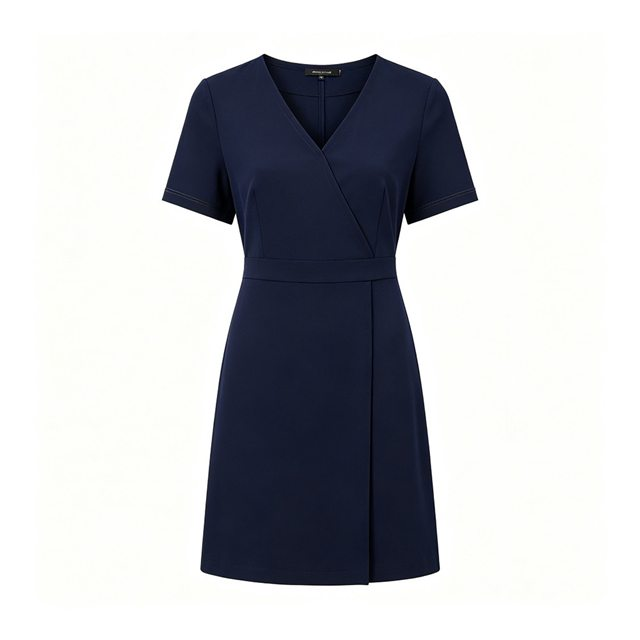
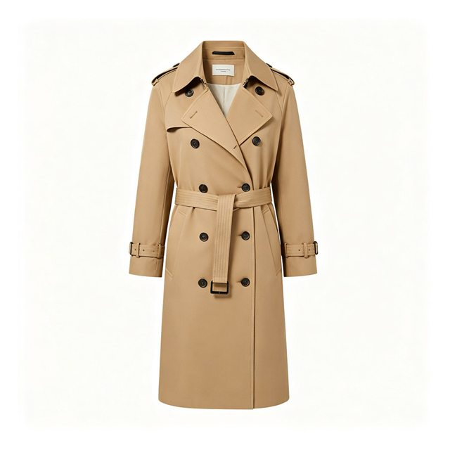

01
白底主图规格化

点击放大主图 · 1000×1000 · 1:1 白底主体占比 ≈65%

点击放大主图 · 1000×1000 · 1:1 白底五金件保留固有色
首图的任务只有一个：让顾客在一屏之内看清商品。我用「柔和棚拍光 + 纯净白底 + 主体居中」作为固定方向，一件商品出图后统一走三步。
- 背景底色压到 #FFFFFF，不留灰底与杂色 —— 灰底可能被平台判定「背景不干净」而影响上架。
- 主体等比缩放后留 8% 安全边距，避免被平台裁切或与角标重叠。
- 细节边缘轻锐化，保留缝线、纽扣与面料纹理的辨识度。
- 导出统一命名与归档，按品类 + 用途分层，便于后续复用。
用到的手法：影棚光重建、白平衡归正、黑白场拉伸、背景净化、边缘锐化。